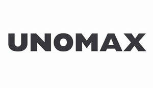

Trade Mark Journal No.2025/010 7 March 2025
UK00004163220 20 February 2025 (16)

- Class 16
- Paper and cardboard; printed matter; bookbinding material; photographs; stationery and office requisites, except furniture; adhesives for stationery or household purposes; drawing materials and materials for artists; paint brushes; instructional and teaching materials; plastic sheets, films and bags for wrapping and packaging; printers' type, printing blocks; Pens; Ballpoint pens; Ball-point pens; Felt-tip pens; Ink pens; Ink for pens; Steel pens [styluses or stencil pens]; Rollerball pens; Refills for ballpoint pens; Fountain pens; Stands for pens and pencils; Marker pens; Highlighter pens; Ink for fountain pens; Coloured pens; Brush pens; Colouring pens; Drawing pens; Marking pens; Pens for marking; Ink cartridges for pens; Marking pens [stationery]; Pen nibs; Ink cartridges for fountain pens; Ballpoint pen refills; Colour pens; Steel pens; Ball pens; India ink pens; Pen trays; Cases for pens; Stands for pens; Ball-point pen and pencil sets; Pen refills; Highlighting pens; Fiber-tip pens; Correction pens; Stylographic pens; Pen and pencil boxes; Fibertip pens; Pen ink refills; Glue pens for stationery purposes; Glitter pens for stationery purposes; Pen boxes; Felt pens; Fibre-tip pens; Pen and pencil holders; Pen or pencil holders; Skin marker pens; Pen cartridges; Gel roller pens; Film pens; Marking pen refills; Fountain pen ink cartridges; Pen ink cartridges; Artists' pens; Pen holders; Pen and pencil cases; Porous tip pens; Pen calligraphy copy books; Felt writing pens; Felt marking pens; Pen clips; Stands for pen and pencil; Felt tip pens; Ink pen refill cartridges; Roller ball pens; Pencils; Pen sets; Pencils with erasers; Ball point pens; Pens [office requisites]; Pen cases; Ink erasers; Pens of precious metal; Notepads; Pen stands; Pen wipers; Pencil erasers; Retractable pencils; Pencil trays; Pocket pen shields; Ink pads; Pencil ornaments (stationery); Pencil ornaments [stationery]; Ballpoint refill cartridges; Pencil eraser refills; Coloured pencils; Cartridges (Ink -) for writing instruments; Holders for notepads; Ink pads for seals; Pencil boxes; Nibs for writing instruments; Pencil cups; Nibs; Pads [stationery]; Colouring pencils; Pencils for colouring; Inkwells; Drawing pencils; Scribble pads; Scribbling pads; Sharpeners (Pencil -); Pencil sharpeners; Pen rests; Ink for writing instruments; Ink sticks; Propelling pencil refills; Sharpeners for cosmetic pencils; Pencil holders; Inks for pads; Decorations for pencils; Attachments for pencils; Charcoal pencils; Nibs of gold for writing instruments; Holders for notebooks; Ink stamps; Whiteboard erasers; Writing paper pads; Pencil lead refills; Jotters; Boxes for pens; Pencil grips; Pencil caps; Calligraphy ink; Mechanical pencil sharpeners; Cosmetic pencil sharpeners; Ink; Mechanical pencils; Pencil ornaments; Pencil tins; Writing ink; Drawing ink; Propelling pencils; Highlighters; Color pencils; Highlighting markers; Colour pencils; Writing brush calligraphy copybooks; Eraser dusting brushes; Watercolor moisturizing palettes; UV ink markers; Correcting pencils; Extensions for pencils; Luminous paper; Pencil extenders; Correction pencils; Correcting pencils for type; Writing brush for calligraphy; Stick markers; Marker caddies; Paint stick markers; Page markers; Dry erase markers; Wet erase markers; Document markers; Fibre-tip markers; Fiber-tip markers; Book markers; Document page markers; Felt tip markers; Chalk (Marking -); Marking chalk; Paper book markers; Book markers of precious metal; Marking stamps; Pencil lead holders; Marking tabs; Pencil point protectors; Magnetic paint brush holder clips; Marking templates; Whiteboards; Blackboard erasers [chalk erasers]; Chalk erasers; Chalk boards [blackboards]; Flipcharts; Chalk; Writing board erasers; Erasers (Writing board -); Wall maps; Writing chalk; Block notepads; Chalk boards; Drawing instruments for blackboards; Wet erase paper labels; Adhesive notepads; Chalkboards; Chalk sticks; Blank paper notebooks; Drawing materials for blackboards; Coloured chalk; Blackboard rulers; Adhesive wall decorations of paper; Blackboards; Map tacks; Dry erase writing boards; Drawing paper; Painting pencils; Slate pencils; Coloured lead pencils; Artists' pencils; Automatic pencils; Pastels [crayons]; Colouring crayons; Pencil sets; Crayons; Pencil sharpening machines; Erasers; Pastel crayons; Drawing protractors; Chalks for colouring; Pencil cases; Pencil leads; Paintbrushes; Rubber erasers; Lead holders [propelling pencils]; Chalks for drawing; Mechanically operated pencils; Protractors as drawing instruments; Cap erasers; Paper-clips; Paper staplers; Staplers for paper; Stickers [stationery]; Hand-held paper knives; Set squares for drawing; Drawing sets; Printing sets; Writing sets; Table place setting mats paper; Angle guides [drawing instruments]; Table place setting mats of cardboard; Table place setting mats of card; Desk sets; Curve templates [drawing instruments]; Portable printing sets; Triangles being drawing instruments; Writing cases [sets]; Writing instruments; Drafting instruments; Drawing instruments; Rulers; Rulers for drawing; Rulers (Drawing -); Drawing rulers; Rulers (Square -); Square rulers; Drafting rulers; Ungraduated rulers; Square rulers for drawing; Angle plotters [drawing instruments]; Protractors [for stationery and office use]; Rule books; Penholders; Pantographs [drawing instruments]; Drawing compasses; Compasses for drawing; Drafting compasses; Maps; Drawing stencils; Drawing brushes; Ink ribbons; Stencil paper; Fine paper; Fine art prints; Drawer liners of paper, perfumed or not; Dustbin liner bags of plastic; Correction sticks; Correction fluid; Correcting ink [heliography]; Books; Non-fiction books; Fiction books; Series of non-fiction books; Comic books; Writing books; Manuscript books; Books for children; Cookery books; Ledgers [books]; Copy books; Covers for books; Printed books; Music books; Series of fiction books; Coloring books; Educational books; Fantasy books; Story books; Autograph books; Colouring books; Wirebound books; Hymn books; Painting books; Travel books; Ledger books; Printed music books; Picture books; Baby books [storybooks]; Reference books; Gift books; Drawing books; Cook books; Poster books; Guide books; Index books; Religious books; Information books; Recipe books; Check books; Prayer books; Scrap books; Covers for cheque books; Hand books; Guest books; Flip books; Coupon books; Resource books; Memorandum books; Jackets of paper for books; Exercise books; Sticker books; Birthday books; School writing books; Song books; Dictation books; Data books; Account books; Children's books; Agenda books; Manga comic books; Activity books; Note books; Baby books; Date books; Sketch books; Bill books; Log books; Visitors books; Pop-up books; Composition books; Signature books; Appointment books; Wedding books; Covering materials for books; Score books; Coloring books for adults; Telephone books; Writing or drawing books; Address books; Music note books; Expense books; Binding materials for books and papers; Pocket books [stationery]; Books featuring fantasy stories; Graphic art books; Novels; Blank journal books; Books featuring fictional stories; Holders for cheque books; Book binders; Paper; Staples; Paper staples; Staples for offices; Staple removers; Staples [office requisites]; Staple removers [office requisites]; Stapling presses [non-electric staplers]; Stapler holders; Stapling guns (Hand-operated -) for stationery use; Paper fasteners; Office staplers; Staplers for offices; Staplers [office requisites]; Binder clips; Stapling guns (Electric -) for stationery use; Staplers for office use; Staplers [office machines]; Paint boxes and brushes; Chalks; Paint boxes; Labels of paper or cardboard; Paper and cardboard; Oil pastels; Pastels; Paint brushes; Writing brush washers; Writing brushes; Writing brushes for calligraphy; Clipboards; Desktop document racks; Paper folders; File binders; Desktop document stands; File folders; Desk calendars; Paper folders [stationery]; Hanging folders; Copying paper; Folders; Notebook paper; Notebook dividers; Calendar desk stands; Document files [stationery]; Copying paper [stationery]; Document file racks; Paper file jackets; File pockets for stationery use; Stationery folders; Folders [stationery]; Box files; Calendar desk pads; File dividers; Desk tidies; Paper clip holders; Pocket calendars; Document files; File trays; Desk trays; Files [stationery]; Pocket notebooks; Desk diaries; Document holders [stationery]; Spiral-bound notebooks; Paper table napkins; Presentation folders.
HARIKRISHNA PATEL